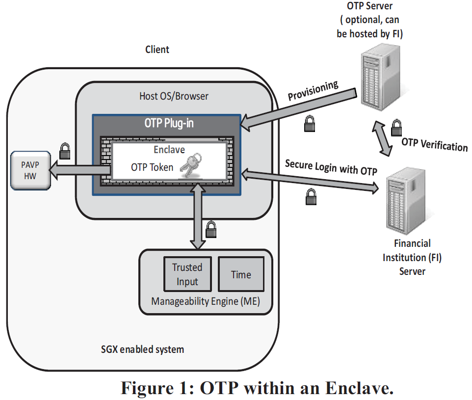
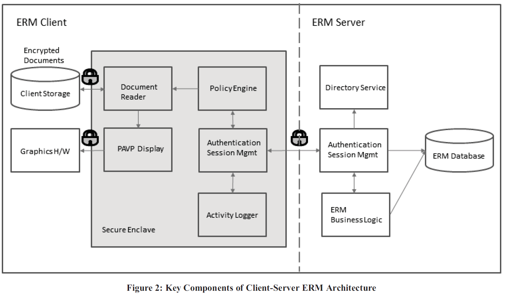
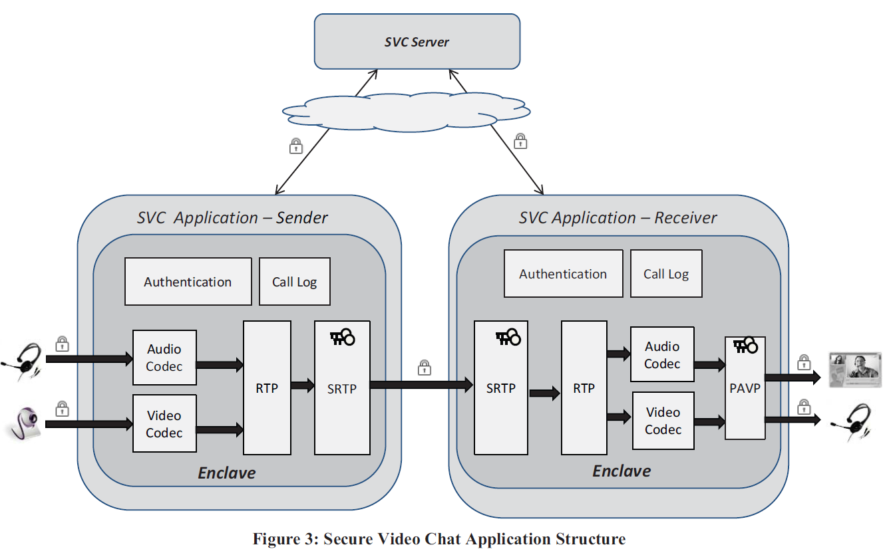

- RSA算法
- One-time Password (OTP)
- Enterprise Rights Management (ERM)
- Secure Video Conferencing (SVC)
- Future Work
- Related Work and Summary
RSA算法
产生公私钥对
随机选择两个不相等的质数$p$、$q$
计算乘积$n=p\times q$：密钥的长度。实际中一般为1024或2048位
计算$n$的欧拉函数$\varphi(n)$
随机选择一个整数$e$：用来加密的数
需要满足$1<e<\varphi(n)$，且$e$与$\varphi(n)$互质计算$e$对于$\varphi(n)$的乘法逆元$d$：用来解密的数
将$(n,e)$封装为公钥，$(n,d)$封装为私钥
RSA加密 — 使用公钥
对明文进行比特串分组，使得每个分组$m$对应的十进制数小于$n$，再依次对每个分组$m$进行一次加密。所有分组的密文构成的序列就是原始消息的加密结果。对于每一个分组$m$的一次加密得到的密文$c$为：
- 注意到$0\le m,c<n$
RSA解密 — 使用私钥
对于密文$0\le m,c<n$，解密算法：
RSA数字签名&验证
在发送一个消息时，除了加密、解密之外还可以额外进行签名、验证以确保消息是由某一个人发送的。
签名
对于一个消息$L$，令$m=md5(L)$，利用私钥中的$d$进行签名，得到$sign$为：
验证
进行验证时，先计算
将$m_{calculate}$与$m=md5(L)$进行对比，如果一致，则$sign$是$m$的有效签名
RSA公开密钥密码体制 — 非对称密码
所谓的公开密钥密码体制就是使用不同的加密密钥与解密密钥，是一种“由已知加密密钥推导出解密密钥在计算上是不可行的”密码体制。
在公开密钥密码体制中，加密密钥（即公开密钥）PK是公开信息，而解密密钥（即秘密密钥）SK是需要保密的。加密算法E和解密算法D也都是公开的。虽然解密密钥SK是由公开密钥PK决定的，但却不能根据PK计算出SK。
Example
公钥登录是为了解决每次登录服务器都要输入密码的问题，流行使用RSA加密方案，主要流程包含：
客户端生成RSA公钥和私钥
客户端将自己的公钥存放到服务器
客户端请求连接服务器，服务器将一个随机字符串发送给客户端
客户端根据自己的私钥加密这个随机字符串之后再发送给服务器
服务器接受到加密后的字符串之后用公钥解密，如果正确就让客户端登录，否则拒绝。这样就不用使用密码了。
One-time Password (OTP)
Overview
在服务端、用户端（hardware token）之间生成共享的pre-shared key。
用户端（hardware token）periodically cryptographically: pre-shared key + time -> code (OTP)
用户端登陆时，不仅要输入username、password，还需要输入这个token上显示的code (OTP)。
- 服务端验证时，也根据pre-shared key、time生成code，与用户的输入进行比较以验证身份。
硬件令牌 hardware token：https://www.techug.com/post/what-principle.html
Design Goals
硬件令牌 hardware token 会产生额外的开支；因而考虑将OTP在软件层面进行实现。但常规的OTP软件实现可能比较脆弱，于是论文中给出了基于SGX的OTP实现方法。
Secure One-time Password Architecture
- OTP server 服务端
- OTP client 客户端：可以又多种实现方式，这里以 browser plugin 为例
- The user requests a new account at a financial institution (FI).
用户向FI请求新账户 - The FI asks the user to install a new browser plugin.
FI要求用户安装新的浏览器插件 - The user chooses to install the plugin.
用户安装新的浏览器插件 - The plugin launches and instantiates the OTP enclave.
插件启动，实例化OTP enclave - The plugin contacts the FI server and asks for a new preshared key.
插件向FI请求新的preshared key - The plugin authenticates the FI server using a protocol such as TLS.
插件向FI服务器证明身份（利用如TLS的协议） - The FI server ensures that it is communicating with a valid OTP enclave using mechanisms described in [2]. It can then establish a trusted channel that terminates in the enclave.
FI服务器确认后建立一个和用户enclave之间的可信通道 - To prove that a new account is being established for a valid user, the user can be provided an authentication code through an out-of-band channel such as a text message or
phone call.
通过带外通道（如电话、短信等）提供验证码给用户（以验证账户创建成功） - The user is prompted for the authentication code, which heenters into the OTP plugin, which passes the code to the enclave, which in turn passes the authentication code over the trusted channel to the OTP server.
用户输入验证码 -> OTP plugin -> enclave ——trusted channel—> OTP server - The OTP server has now verified that it is communicating with a correct version of the OTP enclave, and that an authorized user has requested a new account.
服务端进行验证（正确版本的OTP enclave & 授权的用户） - The OTP server can now generate a random OTP pre-shared key. It will store this key locally in a secure fashion, and associate the key with the user’s account.
服务器生成pre-shared key - This pre-shared key can now be sent to the OTP enclave via the trusted channel that was established during the attestation process. The OTP server and the OTP enclave now possess the same pre-shared key.
pre-shared key通过可信通道传输给用户的OTP enclave - The OTP enclave can now store the pre-shared key using the sealing process described in [2]. As described in this paper, the OTP pre-shared key can be encrypted and stored with a key that is only known to the OTP enclave executing on the same platform that initiated the OTP provisioning process.
OTP enclave存储pre-shared key并进行封装、加密——只能被这个enclave访问 - At this point both the OTP server and the OTP client enclave in the OTP plugin can securely access the same preshared OTP key.
Use OTP as a second authentication factor
- A user begins the login process with her financial institution using her browser with the installed OTP plugin.
- The web page received by the browser contains an OTP element which signals the OTP plugin to become active.
- The OTP enclave and OTP server establish a secure channel as described in the provisioning step previously.
- The OTP server generates a random challenge value and sends this to the OTP enclave over the secure channel.
- The OTP enclave generates the OTP value by cryptographically combining the challenge, the current time, and the pre-shard key to produce the one-time password.
- As the user completes the login procedure, the browser plugin adds the computed one-time password to the set of data that is sent to the FI.
- The FI can now validate that the correct one-time password was used during the login process.

Enterprise Rights Management (ERM)
Overview
Enterprise Rights Management (ERM) is a technology that aims to secure crucial elements of access and distribution of sensitive documents, such as confidentiality, access control, usage policies, and logging of user activities.
- Enterprise data - 通常的ERM针对于企业数据的保护
- Personal data - 保护需求日趋增加
ERM protected applications typically run on off-the-shelf client platforms and operating systems. Malware could compromise the ability of an ERM application. 从而导致 transparent loss of digital assets (如极光行动 operation Aurora). Current solutions, which attempt to protect ERM assets using encryption and access control mechanisms, are vulnerable to several attacks:
- steal document content and/or encryption keys from application memory where it is processed
- copy display content from video frame buffers
- violate use policy (e.g., alter time on the client machine to extend an expired document lease)
- if an attacker has physical possession of a platform, he may be able to use memory snooping or cold
boot style attacks [6] to acquire the keying material for a valid ERM solution. This would permit the attacker to create malware which could use those stolen keys to effectively impersonate a valid ERM client. - an authorized consumer of enterprise data may, in rare circumstances, wish to maliciously copy large
amounts of sensitive digital information, and could directly modify the ERM solution to avoid logging and other forms of detection.
Design Goals
Protect the system against the following threats:
- Document content and encryption key theft.
- Platform and application identity spoofing.
- Use policy and activity log tampering.
（针对于client端，但服务端也可以用类似的方法扩展保护）
Secure ERM Architecture

Client
Authentication Session Mgmt
Authenticates the client platform and user to its counterpart in the ERM server
Generate a verifiable report- client’s identity
- information about the user running the ERM session
由server的
Directory Service进行验证
随后application secrets被安全地封装到client的平台（利用SGX封装能力），将用于与服务端间建立secure sessionERM Database：存放document use policy & encryption keyPolicy Engine：文档拥有者利用Policy Engine规定use policy & access control
随后这些policy通过安全通信channel传送给server
受保护的文档在enclave中被加密（用server端随机生成的key，保存在ERM Database）。这些文档本身不需要被存放在服务端数据库中！一个授权的用户接收这个加密的文档，可以通过enclave中的
Document Reader进行阅读。Policy Engine确定use policy（从服务端下载的）和用户操作一致后，也可以获得decryption key并将控制权转交给Document Reader组件。Document Reader在enclave中对document解密生成bitmap，利用PAVP技术加密bitmap（与GPU间共享的对称密钥），传输给图形硬件进行显示。Activity Logger：记录用户与文档阅读、传输相关的活动并呈递给服务器。
Secure Video Conferencing (SVC)
Overview
the migration of threats from the network onto the computing platform 威胁不仅限于网络中，逐渐转移到计算设备上！
Threat Model
consider a two person Secure Video Chat (SVC) application
Session Initiation Protocol (SIP)
Real Time Transport Protocol (RTP)
Secure Real Time Transport Protocol (SRTP)
The limitation of such a secure video chat is that it is vulnerable to attacks such as the following:
- Keys used for SRTP encryption can be stolen from the application’s memory during processing.
- The cleartext AV stream can be stolen from the application’s memory during media stream processing or SRTP decryption.
- User identities can be spoofed, compromising participant authentication.
- Any policy, such as logging the call events, or not allowing recording, etc., can be violated through modification of application code that enforces such policies.
Secure Video Conferencing Architecture
Modify the design of the stack with well-defined trusted and untrusted components
The untrusted components contained code and data for interfacing with operating system services and drivers.
The trusted components contained code and data requiring confidentiality and/or integrity protection such as SRTP keys, media streams, cryptographic operations, policy enforcement logic etc.
- Authentication
- Media Processing
- SRTP
- Trusted I/O
- Policy Engine and Call Logging

Future Work
Hardening Server Processing
Trusted Input
Improved Tools
Managed Runtime Environment (MRTE)
Tamper Resistant Software (TRS)
A challenge to all software approaches is to be certain that privileged software is trustworthy
TPM
TXT